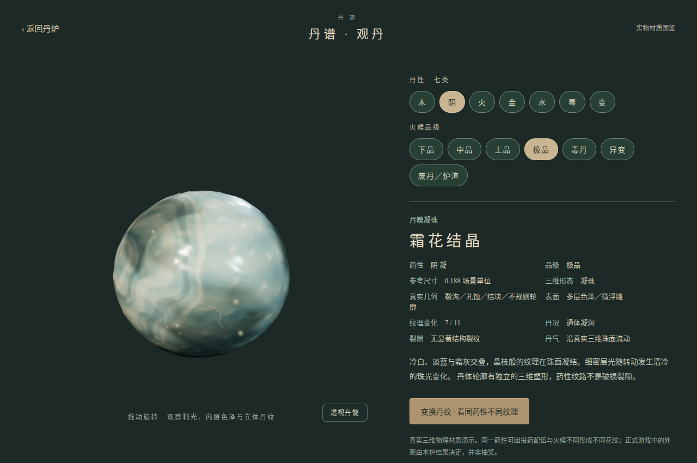
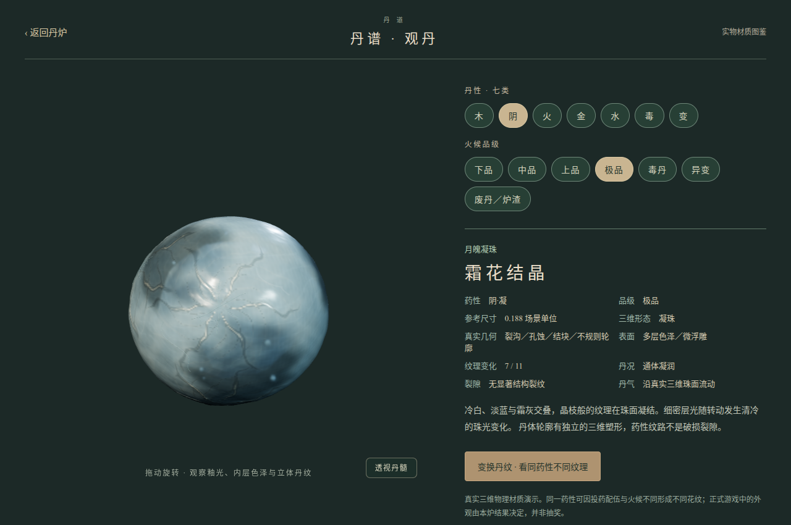
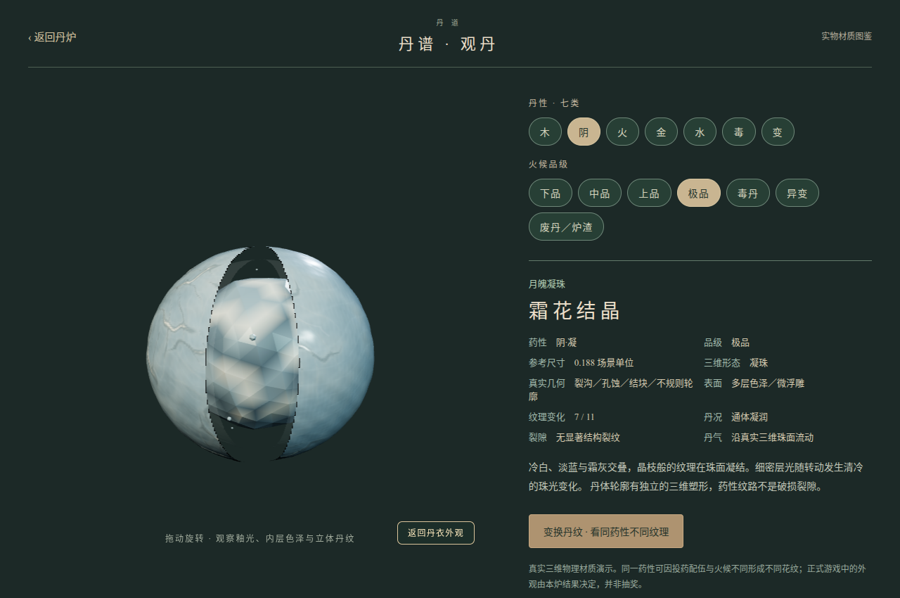

丹道 / P0-04d / 实际 WebGL2 验收
矿脉不再是横线，霜晶不再只是白色云纹
以下均为同种子、同机位的真实 Three.js 三维游戏截图，便于直接观察新旧差异；不使用 AI 概念画替代游戏模型。
01 · 金系：等距横纹 → 自然矿脉


02 · 阴系：灰白云球 → 冷月石与霜晶


03 · 真实三层结构及锦缎收藏


04 · 手机资源与功能回归
| 项目 | 实测结果 |
|---|---|
| 桌面/模拟手机切换测试 | 各连续 24 次，脚本错误 0 |
| 纹理数量与绘制调用 | 最多 6 张纹理 / 10 次 draw calls |
| 模拟手机 390×844 | 最高约 46,904 三角面，无横向溢出 |
| 完整开炉、分享、乾坤囊 | 通过，账本与丹药身份不变 |
这里的手机数据来自桌面 NVIDIA GPU 的触屏模拟，并非实体 Android 或 iPhone 的 FPS 验收。